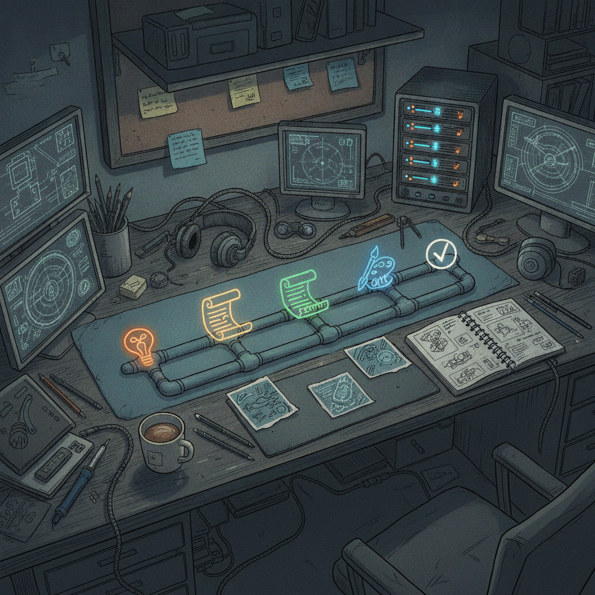

The Banana Lab: MonkeyZoo's Comic Production Workflow Gets a Real Studio
MonkeyZoo-Production-Workflow-System is Rick's tool for running the production side of the MonkeyZoo comic book series: taking a season of issues from idea to finished product without losing track of where each one is in the pipeline. Over the last 24 hours the project went from a set of scattered pieces to something that actually looks and feels like a studio.
What just shipped
A name and a home. The app got rebranded as The Banana Lab, with a proper design system, a persistent workspace shell, and a live static preview synced to GitHub Pages so the interface can be checked at any time without spinning up the full app.
The production engine underneath. A structured production workflow engine landed, along with config, character bibles, and an active season plan. This is the backbone that everything else hangs off of: it is what turns "make a comic" into a repeatable process.
Character and story tools. The character and story workspaces got integrated into the shell, and a full Story and Script Generation Workspace was built out (#9). On top of that, guided issue creation (#6) gives a walked-through path for starting a new issue instead of staring at a blank page.
A dashboard to see it all. The issue production dashboard with stage controls (#8) is the piece that lets Rick see every issue in the season and where it sits in the pipeline, and move it forward.
Cleanup and honesty passes. A few commits specifically removed unverified production status labels and grounded the dashboard's data sources in what is actually true, rather than placeholder claims. There was also housekeeping: branch protection and repo validation, relative path fixes for character media on Pages, and handoff docs recording the productization task that got this whole push started.

Why it matters
Running a comic series is not just drawing pages. It is scripts, character continuity, season planning, and knowing which issue is stuck where. This update turns that into an actual system: a workspace for generating story and script content, guided creation so starting a new issue is not a cold start, and a dashboard that reflects real state instead of guesses. For a solo or small-team comic operation, that is the difference between juggling spreadsheets and having a tool that just runs the season.
Rick's take
This one is fun for me because it is scratching my own itch. I wanted a way to run MonkeyZoo like a real production pipeline instead of tracking issues in my head, and in one day it went from an engine and some config files to something with a name, a look, and a dashboard I can actually click through. The part I am most into right now is the guided issue creation. Removing the blank-page problem for starting a new issue is a small thing on paper but it changes how often I actually sit down and start one. Early days still, but it already feels like a studio instead of a pile of scripts.
What's next
With the workflow engine, story workspace, and dashboard now in place, the natural next step is putting them through a real issue end to end and seeing where the seams show. Expect more grounding passes like the one that stripped out unverified status claims, since keeping the dashboard honest about real state is going to matter more as more issues move through it.